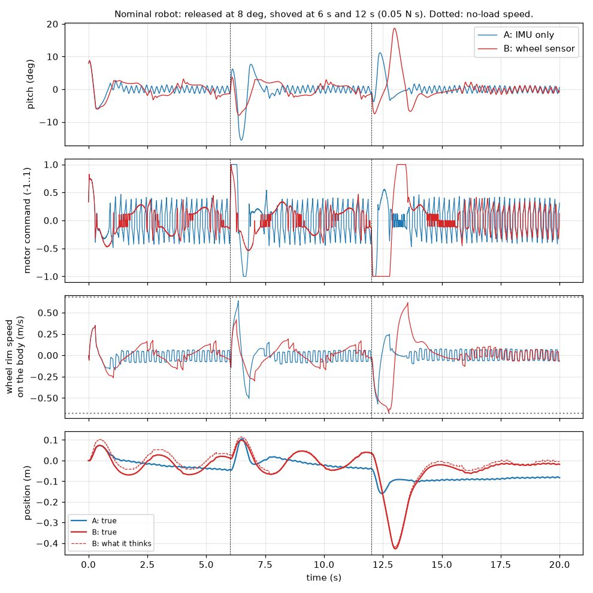
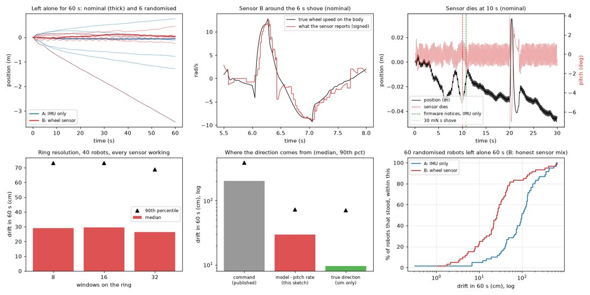

Stage 1 reference: Simulation
What the MuJoCo model of stage 1 predicts, and how much margin the TT motor has.
On this page
What the simulation says
Full results: out/sim.md. Clip: python sim.py video out.mp4 (add --sensor for milestone B).
Numbers are for milestone A (IMU only) unless they say otherwise.
- It balances. The nominal robot stands, recovers from a release at 14 degrees either way, and takes a 50 mN s shove at battery height (a 50 g ball arriving at 1 m/s).
- Left alone, 60 of 60 randomised robots stand for 20 s. With a random start lean and two shoves of 20-50 mN s, 258 of 300 (86 %) stay up; with the wheel sensor, 277 (92 %). Nine in ten recover from a 9 degree release and a 30 mN s shove (10 degrees and 40 mN s with the sensor).
- The TT's speed is enough, with a little to spare. A shove uses up to 0.65 of the 0.68 m/s available. A 30 rpm gearmotor recovers from nothing in the same model and a 60 rpm one from 2 degrees; the TT's 200 rpm gets 14.
- Torque, not speed, is the tighter limit. Doubling the stall torque takes the recoverable lean from 14 to 20 degrees. That is the case for stage 2's second motor.
- A lower battery helps. This was the surprise: with the centre of mass 65 mm above the axle instead of 85 mm it recovers 16 degrees, not 14, because the motor has less to hold. The mast could be 20 mm shorter.
- It will wobble. About +-1 degree at 4 Hz, from the 5 degrees of slop in the gearbox. That is normal for a TT balancer, and it is the first thing to compare against the real robot.
- It will wander. On the IMU alone it drifts about 50 cm in 20 s and about 1 m in 60 s (medians, left alone).
- The wheel sensor cuts the drift about four times, and no further. With it the median is 15 cm in 20 s and 26 cm in 60 s. One sensor cannot tell which way the wheel turns, and at a standstill most edges come from the body rocking over a still wheel; that, not the ring's resolution, is the limit. A second sensor a quarter of a window away would fix it and is not part of stage 1.
- The sensor does not help it balance. Its speed reading is too coarse and too late, so the balance loop still runs on the motor model; the sensor only counts position. With it the robot sways slowly, about 7 cm either way.
- If the sensor fails it carries on. The firmware notices within about a second and falls back to the IMU.
- Getting up by itself is a coin toss. A fixed kick off the crash bar works for the nominal robot and 57 % of the randomised ones (62 % with the sensor). Stand it up by hand.




Not covered: the model is left-right symmetric, so nothing tests the narrow track. See risks.
Generated by sim.py test. MuJoCo, 800 Hz physics, the firmware's filter, wheel sensor code and PID at 400 Hz. Motor and gearbox figures are estimates until the bench measurements exist. Nothing here has run on hardware.
Two milestones, one sketch. A: IMU only (no wheel sensor, or it is unplugged): speed comes from a model of the motor. B: wheel sensor: one TCRT5000 reading a 16-window ring on the left wheel, 32 edges per turn, no direction; the firmware trusts it after 8 believable edges and falls back to A by itself if it stops. Randomised robots in B have the sensor fitted the honest way, as the published env does: 10 % unplugged or misaligned, 10 % flaky (missing 10-30 % of edges), and every ring with its own print errors, comparator hysteresis and chatter.
Motor model no-load speed (wnl, measured at bring-up step 3): 21.0 rad/s at 6 V. Dead-zone compensation 0.1.
| Gains (u per rad, per rad/s, per m/s, per m) | kp | kd | ki | kv | kx | tc (s) |
|---|---|---|---|---|---|---|
A, imu set |
1.62 | 0.37 | 0.0 | 2.4202 | 0.1372 | - |
B, ir set (used while the sensor is trusted) |
1.791 | 0.304 | 0.0 | 2.086 | 0.539 | 0.0 |
In B, v is still the motor model (tc 0: no correction from the measured speed, which is too coarse and too late to balance on) and x is counted from the wheel edges plus the change in pitch, so it holds position instead of integrating the model.
Side by side
| A: IMU only | B: wheel sensor | |
|---|---|---|
| Nominal robot, 20 s, released at 8 deg, two 50 mN s shoves | stays up, pitch rms 2.7 deg, ends 8 cm away, saturated 2 %, peak wheel 0.64 m/s | stays up, pitch rms 3.3 deg, ends 2 cm away, saturated 5 %, peak wheel 0.67 m/s |
| Nominal robot left alone, 60 s | stays up, ends 6 cm away | stays up, ends 4 cm away |
| Release angle, nominal (either way) | 14 deg | 14 deg |
| Release angle 90 % of 60 randomised robots recover from | 9 deg | 10 deg |
| Shove at battery height, nominal | 50 mN s | 50 mN s |
| Shove 90 % of randomised robots take | 30 mN s | 40 mN s |
| 300 randomised robots, 20 s, start lean up to 5 deg, two shoves of 20-50 mN s: stay up | 258 of 300 (86 %) | 277 of 300 (92 %) |
| ... median pitch rms; drift median (90th pct) | 2.3 deg; 40 cm (115 cm) | 2.5 deg; 10 cm (46 cm) |
| ... 90th-percentile peak wheel speed | 0.64 m/s | 0.60 m/s |
| 60 randomised robots left alone, 20 s: stay up; wobble about their own balance point | 60 of 60; 0.76 deg rms | 60 of 60; 0.91 deg rms |
| ... drift in 20 s, median | 52 cm | 15 cm |
| Same robots, 60 s: stay up; drift median (90th pct) | 60 of 60; 100 cm (364 cm) | 60 of 60; 26 cm (152 cm) |
| Gets up off a crash bar by itself (same fixed kick) | 57 % of 40; nominal yes | 62 % of 40; nominal yes |
B broken down by the state of the sensor:
| Sensor | 300 shoved robots: stay up | drift in 20 s, median | 60 robots left alone 60 s: stay up | drift in 60 s, median (90th pct) |
|---|---|---|---|---|
| working | 221 of 236 (94 %) | 9 cm | 46 of 46 (100 %) | 25 cm (51 cm) |
| flaky | 24 of 30 (80 %) | 10 cm | 4 of 4 (100 %) | 13 cm (27 cm) |
| unplugged (runs as A) | 32 of 34 (94 %) | 38 cm | 10 of 10 (100 %) | 130 cm (374 cm) |
With the sensor plugged in, the firmware trusts it a median 0.7 s after it arms (nominal: 0.24 s); until then it runs exactly as A.
The wheel sensor
Ring resolution (40 robots, every sensor working, same gains, the firmware's edges-per-turn constant changed to match):
| Windows (edges per turn) | Left alone 60 s: stay up | drift median (90th pct) | 20 s with two shoves: stay up | edges counted the wrong way |
|---|---|---|---|---|
| 8 (16) | 40 of 40 (100 %) | 29 cm (73 cm) | 32 of 40 (80 %) | 12 % |
| 16 (32) | 40 of 40 (100 %) | 30 cm (73 cm) | 33 of 40 (82 %) | 13 % |
| 32 (64) | 40 of 40 (100 %) | 26 cm (69 cm) | 32 of 40 (80 %) | 13 % |
Where the direction comes from. The sensor gives magnitude only. Every counted edge gets a sign from a rule (40 robots, every sensor working, 60 s left alone; and the nominal 20 s shoved run):
| Sign rule | Edges counted the wrong way | ... of which within 100 ms of a sign reversal | Drift in 60 s, median (90th pct) | Nominal shoved run: ends; position estimate off by |
|---|---|---|---|---|
| command (published robot) | 50 % | 50 % | 203 cm (391 cm) | up, 1 cm away; 0 cm |
| model speed - pitch rate (this sketch) | 13 % | 12 % | 30 cm (73 cm) | up, 2 cm away; 1 cm |
| true direction (sim only, unreachable) | 0 % | - | 10 cm (71 cm) | up, 1 cm away; 1 cm |
A balancer standing still rocks over its wheel. The sensor sits on the body, so most edges at a standstill come from the body turning over a wheel that hardly moves on the floor, and they run against the motor command. The published rule (sign of the last command) therefore counts about half of them backwards and the position estimate walks off. This sketch signs each edge with the direction the wheel should be turning on the body: the motor model's speed minus the pitch rate. The residual error is edges near a reversal, where the model and the gearbox slop disagree.
The sensor dies mid-run. Nominal robot, sensor dead at 10 s: the firmware notices at 10.79 s, runs IMU only from then, stays up through a 30 mN s shove at 20 s. 60 randomised robots with a working sensor that dies at a random time between 5 and 15 s, shoved (30 mN s) at 20 s: 54 of 60 stay up; the same robots: 60 when it does not die, 54 with no sensor at all. The firmware noticed in 60 of 60, a median 0.89 s (worst 5.20 s) after it died. Until it notices, the sensor reads a stopped wheel and the position stands still, so it holds a stale position; the inner loop is the motor model either way.
Dead 50 ms after a 50 mN s shove (nominal): stays up, noticed at 6.17 s.
Unplugged with no pull-down (floating input, about 100 edges a second of hum): the edges counted during gyro calibration mark it as noise, so it runs as A: stays up, sensor FAILED, ends 8 cm away.
wheel off with a working sensor plugged in: stays up, the same run as A to the last digit.
What limits it (milestone A)
| Motor no-load speed (rpm) | 30 | 60 | 90 | 120 | 160 | 200 | 250 | 300 |
|---|---|---|---|---|---|---|---|---|
| Largest lean recovered (deg) | 0 | 2 | 8 | 10 | 12 | 14 | 16 | 16 |
| Centre of mass above axle (mm) | 25 | 45 | 65 | 85 | 105 | 125 | 145 |
|---|---|---|---|---|---|---|---|
| Largest lean recovered (deg) | 20 | 18 | 16 | 14 | 14 | 12 | 12 |
| Stall torque at 6 V (N m) | 0.03 | 0.04 | 0.06 | 0.08 | 0.1 | 0.12 | 0.16 |
|---|---|---|---|---|---|---|---|
| Largest lean recovered (deg) | 4 | 8 | 12 | 14 | 16 | 18 | 20 |
Getting up by itself
Lying on a crash bar at 25 deg, a fixed kick (roll away for 0 ms, then full power under the body, hand over to the PID inside 15 deg) gets 57 % of 40 randomised robots back up in A, 62 % in B; nominal robot: yes (A), yes (B).